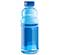
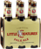

如遇任何问题, 建议, 意见请通过以下方式与我取得联系:
赞助发展
SocksCap64能与你见面极其不易. 为了能做好这个软件我投入了大量的精力. 网站服务器的购买以及免费代理服务器的购买都都给我带来了很大的经济压力. 如果您认为SocksCap64还可以的话, 请点击如下Paypal按扭或扫描Alipay捐赠按扭进行经济支持. 谢谢!
再让我说说做一个这样的软件所要付出的努力吧, 它需要花费大量的时间, 并且为了让大家能有更好的体验其中一些服务是需要我自己掏钱支付. 如果你能帮我承担其中一部份费用我将感激不尽! 当然如果你不想这么做也没有关系, 请将这个软件分享出去让更多的人能使用上它.
让我感到欣慰的是: 有这么多网友喜欢这个软件并且每天都会有很多人给我发来邮件给我鼓励, 还有不少人给我提供了服务器以及资金方面的赞助. 其实, 这些赞助对我来说仅仅是杯水车薪, 但是它却带给我巨大的开发动力. 在此谢过那些给我提供帮助以及赞助的网友们!
最后, 如果您认为SocksCap64还可以的话, 请通过Paypal或扫描Alipay,WeChat二维码进行经济支持同时也可以给我来信给我精神支持. 谢谢!

$1.20 — 请我喝一瓶水
繁忙的工作使得我经常忘记给我的饮水机加水, 如果你能让我购买一瓶矿泉水放在家以备不时之需, 我将感激不尽.
$3.99 — 请我喝一大杯咖啡
边听收音机边步行上班, 如果你能让我再喝上一杯咖啡的话, 我想我会更有动力专注于创作了吧.
$7.00 — 租一张DVD用于度过漫漫长夜
完成SocksCap64的大部份工作都在晚上进行, 慢慢长夜是那么的难熬. 当瞌睡来临时, 如果有一张好片片或许能让我在沙发稍稍放松一阵. 我保证一定会把声音调小不影响你的休息的.
$9.99 — 帮我付一个月的邮件发送费用
网站每个月都要发送大量的邮件, 为此我每个月都要支付一笔费用.

$20 — 请我喝一箱高砂麦酒
我很难想象如果没有酒的话这个软件是否会产生, 关于这个软件的很多点子都是我在酒后想到的, 并且每次喝了酒后我都感觉全身充满了能量从而有勇气投入战斗之中.
$40 — 能让我带小孩去看一场电影
$40 — 能让我带小孩去看一场电影 这个工作占用我大量的晚上以及周末的时间, 导至我很少去陪伴孩子, 这是我非常内疚的事情! 我也非常的希望能在周末带上孩子去看一场电影.
$50 — 帮我付一个月的代理服务器的费用
为了能让全球的网友使用到这个软件,我不能租用那些廉价的服务器, 可是这又需要我每个月从自己的口袋中掏出一大笔费用.

$80 — 帮我付一年的GitHub费用
曾经发生过几次硬盘大灾难让我曾经倍受打击, 我现在对于本地文件的保存已经失去了信心, 重要的代码必须托管于专业的托管网站上. Github是我的首选可是这又是一笔巨大的开销呀!
$100 — 能让我带上妻子出去吃一顿晚餐
太多次因为急于修改软件的Bug而爽约于我的妻子或家人, 能带上我的妻子及家人出去吃一顿晚餐是多么美妙的事情.
$300 — 帮我付一个月的房租
房价太高, 算了一下不吃不喝再工作9999年就可以买房了, 加油! 可是每个月的房租真是一笔巨大的支出呀, 我不想见到房东.
联系我

国际化支持
SocksCap64通过gettext实现国际化. SocksCap64默认只带有en_US, zh_CN两种语言文件, 如果你想帮助SocksCap64翻译更多的语言, 请在程序安装目录下找到.\lang\scap.po文件进行翻译, 请将翻译后的文件以及您的联系方式, 社交网络帐号通过邮件(sockscap64 at gmail.com)发送给我, 您的名单将会出现在贡献者名单中同时您的语言文件将在下一个更新中被一起发布. 推荐使用PoEdit进行语言翻译, 高效快速! SocksCap64谢谢你的参与.
关于作者
Taro, 一名高中辍学生. 喜欢Google, 喜欢Facebook, 喜欢Apple, 喜欢美剧. 做过送报员, 快递, 维修工, 在工厂流水线做过工人. 编程全是自学, 仅仅因为兴趣. 身边朋友常和我说: 以我的技术能力完全可以去IT公司找一份工作就能获得比我现在多得多的收入. 可是我认为:”如果将兴趣变成了一种谋生手段, 兴趣将不在, 技能也将变得泛味”, 你认为呢?
软件介绍
64位版本的SocksCap, 完美支持Windows XP/Vista/Win7/Win8/Win8.1/Win10的32位及64位系统.
SocksCap64是由Taro Labs开发的一款免费的应用程序外壳代理软件. SocksCap64可以使Windows应用程序通过SOCKS代理服务器来访问网络而不需要对这些应用程序做任何修改, 即使某些本身不支持SOCKS代理的应用程序通过SocksCap64之后都可以完美的实现代理访问. 例如: Web Browsers, IM程序, FTP Clients, e-mail programs or games.
通过SOCKS代理服务器访问网络后可以隐藏你的真实IP身份或者实现网络加速以及穿透防火墙的作用. SocksCap64当前只支持Socks4/5代理协议, 支持TCP&UDP协议.
通过SocksCap64来使Windows应用程序透过SOCKS代理访问网络具有极大的便捷性. SocksCap64与VPN相比其便捷性就在于VPN一但连接后整台电脑的网络连接都会透过VPN, 如果你正在玩游戏或者正在登录IM软件(如QQ)则都会被断线重连, 而使用SocksCap64则只需新开一个应用程序而互不影响. 当然目前也有一些浏览器的插件能实现和SocksCap64大至一样的功能, 但是那些插件的缺点也非常明显: 不支持有帐号密码验证的代理. 配置相对SocksCap64而言复杂许多. 仅有主流的少数几款浏览器有这样的插件.
SocksCap64的原型来自于作者的一个私人使用的代理软件. 有一天, 作者的一个朋友问作者是否有好用的代理软件, 于是作者将这个私人软件发给这位朋友使用, 朋友使用之后惊叹的与作者说: “这么优秀的软件为什么要藏起来, 你应该将它放在网上让全球有同样需求的朋友使用, 你甚至可以收取一定的费用”. 于是作者接受建议, 抽出时间将这个私人使用的代理工具整理成一个易于使用的代理软件, 取名为SocksCap64. 当然, 作者没有接受朋友的收费建议, 这个软件是免费的, 并且永久免费使用!
SocsCap是Permeo出品的一款在Windows XP时期最受欢迎的代理软件. 可惜的是Permeo不再维护SocksCap, 它无法在64位系统下工作.